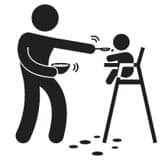

Tazecik mevsim yeşillikleri eşliğinde az yağlı dana kıyma ve sotelenmiş organik sebzeler ile hazırlanmış tatsız tuzsuz ek gıdalar…
Buraya kadar iyiydi tabi, dayadın çocuğun ağzına acıkınca memeni ya da biberonu, o da lıkır lıkır içti, az zamanda çabucak doydunuz kalktınız. Sonra bir gün doktoru, artık ek gıdaya geçebilirsin, dedi. Heyecanlı bir süreç, hemen mama sandalyesi almaya gittiniz, bir tane de önlük, bebek kaşıkları, layla layla laylaaaa… Bir kabağı, bir havucu, bir patatesi haşlayıp püre yaptın. Doktorun dediği gibi, ilk bir yıl tuz yok, yağ yok. Ohhh mis gibi püre oldu. Aaaaa noldu, yemiyor mu? Yemez tabi. Bi kaşık at bakalım kendi ağzına sen yiyecek misin? İğrenç.
Ek gıdaya başlamak hakikaten bir macera. Hangi ayda ne verileceğini doktorlar söylüyor zaten. Bazı doktorlar 4. ayda başlatırken bazıları 6. ayda başlatıyor. Artık hangisine denk gelirsen onu dinlersin.
Yemekleri blender’dan geçirerek verme, dediler. Ben ne yaptım?
Diyorlar ki, altı aylık bir bebek ağzının içinde ezilmiş yemeği gezdirebilir. Bizimkiler gezdiremediler. Öğürdüler. Yediklerini de çıkarttılar. Zaten zor olan yemek yedirme işi bir de kusmuk temizleyerek daha da zor hale geldi. Blender’dan geçirince gayet güzel yediler. Bir süre sonra, hakikaten ağzında yemek döndürebilir hale gelince ezerek vermeye başladım. Bence önce bir ezerek vermeyi dene, baktın olmuyor çek blender’dan gitsin. Bir sürü derdin var zaten, bir de onu mu düşüneceksin?
İlk bir yıl yemeklere tuz koyma dediler. Ben ne yaptım?
Yemin ederim ilk zamanlar tuzsuz vermeyi denedim, ciddi söylüyorum, gerçekten denedim, hemen pes etmedim. Yemediler arkadaşım, yememeyi bırak suratıma tükürdüler. Sonra bir tutam tuz, azıcık ama, tam da tencerenin üzerinden geçerken elimden düştü, kazara oldu, ama artık düşmüş de bulundu... Bir gün öyle vereyim ne olacak dedim. Yediler. Mucize gibiydi. Sanki tuz değil de sihir tozuymuş mübarek. Sonra hep öyle işte kazara azıcık düşürdüm. Tuz yemeyeceğiz diye çocuk kabaktan, patatesten, etten, tavuktan da mı mahrum kalsın yani? Sen de işte önce tuzsuz denersin, yerse ne âlâ, yemezse elinden kayıversin birazcık tuz.
Sevmedi diye vazgeçmeyin, dediler. Ben ne yaptım?
Hah, işte burada bak kendi hakkımı yemem. Sevdirene kadar uğraştım. On beş gün süre ile farklı farklı çorbalar yaptım. Beğenilerine göre çorbalara not verdim. Tavuk suyuna şehriye 5, domates çorbası 3 vs. Sonra buna göre menüler oluşturdum. Sekiz dokuz tane çok sevdikleri çorba oldu ve dönüşümlü olarak yediler.
Meyveyi püre yapın, meyve suyu vermeyin, dediler. Ben ne yaptım?
Onu da denedim. İkizler onu da yemedi. Suyunu sıktım, içtikleri şey cennetten gelmiş kutsal bir içecekmiş gibi huşu içerisinde içtiler. E şimdi çocuk sevdi, vermeyecek miyiz? Name püreyi daha çok sevdi, ona püre verdim. Doktorla inatlaşmıyoruz herhalde, çocuk yiyorsa öyle veriyoruz, yemiyorsa kendi bildiğimizi yapıyoruz.
Evde kendiniz yapın, hazır mamaları almayın, dediler. Ben ne yaptım?
Çocuklar evdeyken elbette kendim yaptım. Ama dışarı çıkmışsak, bir kavanoz mamanın ne zararı dokunur ki? Doktora sordum: Ne zararı dokunur ki? Şöyle dedi: Sonuçta kendi yaptığın yemeklerin içine koyduğun sebzeyi marketten alıyorsun, nereden geldiği belli değil. O mamaların içindeki sebzeler en azından organik! Hahahaha istediğim cevap. Sonuç olarak yemeği kendim yaptım, arada sırada kavanoz mama verdim. İnan bana kavanoz mama, çantanın içine dökülmüş sebze çorbasından daha pratik.
Yoğurdu kendiniz mayalayın, dediler. Ben ne yaptım?
Bunu da yaptım. Hem de hatasız. Tam puan alabileceğim belki de tek konu. Küçük cam saklama kapları aldım. Her sabah kalkar kalmaz onların içine mayaladım. Hatta ilk bir yıl devam sütü ile mayaladım, sonra normal inek sütü ile yaptım. Hâlâ her gün taze yoğurt yapıyor ve yediriyoruz. Yoğurt önemli, onu atlamayın. Çünkü en kolay bunu yiyorlar. (Yalan söyledim, tam puan alamam. Bazen Tuna yemiyor, içine azıcık toz şeker koyuyorum. Azıcık ama, bir çay kaşığı. (Yalan, tatlı kaşığı, ama küçük tatlı kaşığı)).
Yoğurt yapma makinesi aldım. Dünyanın en gereksiz icadı listesine tepeden düşermiş. Geri verdim.
Yemeyen çocuğa zorla yemek yedirme önerileri:
Yemek güzel, blender’dan geçirdin, tuzunu kattın, karnı da aç ama yemiyor. Yemez. Bir sebebi yok. Çocuk çünkü. Bu dünyaya senin istediklerini yapmayıp seni delirtmek için gönderilmiş. Misyonu bu. İşte o zaman ne yapacaksın?
- Mama sandalyesi oyuncakları var. Silikonlu, mama sandalyesine yapışıyor ve çocuk onunla oynarken yediriyorsun. Ama en fazla üç öğünü kurtarıyor. Ertesi gün yüzüne bile bakmıyor.
- İlginç objeler kutusu hazırla. Mama sandalyesinin yanında hazır bulunsun. Sıkıldıkça değiştir ve yemek bitene kadar devam et.
- Ona çorbanın içine ekmek doğramayı öğret. O küçücük parmakları ile o ekmekleri kopartana kadar sen yemeğini yedir.
- Saklama kabının içine bir miktar su koy ve onunla oynasın. Arabasını yıkayabilir, içine çörek otu atıp yüzdürebilir, bebeğini yıkayabilir, artık canı ne istiyorsa onu yapsın. Suyla oynamak çocukların hoşuna gidiyor. Üstü ıslanıyor ama karnı doyuyor.
- Havalar güzelse parkta yedir. Bakınırken neler olup bittiğini anlamıyorlar.
- Babasına söyle karşısına geçip agucuk, bugucuk, dürürürürü gibi sesler çıkartsın, çocuk onu izlesin. Sen bakma ama. Soğursun kocandan. Tanrım bu o mu? dersin.
- Eline bir tablet bilgisayar ver, o transa geçmişken sok kaşığı ağzına ve hızlı ol, transtan çıkmadan bitir.
- Tüm bunlara rağmen yemiyor mu? Bırak. Ne hali varsa görsün. Acıkınca gelir.
 Püf Noktaları
Püf Noktaları
- Yaz sebzelerinden dondurucuya hazırlayıp koyabilirsin. Buzdolabı poşetlerinin içine hazırlanmış bir pişirimlik domatesler, bezelyeler, taze fasulyeler kışın da iş görüyor.
- Tavuk suyu ve et suyu her çorbaya lezzet katıyor. Ben organik tavuk alıp kaynatıyorum. Sonra pet bardakların içine bir kepçe tavuk suyu ve birkaç parça tavuk eti koyuyorum. Ağzını streç film ile kapatıyorum ve buzdolabında donduruyorum. Bir çeşit tavuk bulyon. Pet bardaklar içindeki su donduğunda kolaylıkla kırılıp yırtılıyor. Çocuk için yaptığın yemeğin içine bir tane salıyorsun, güzel oluyor.
- Tarhana bizim için hayat kurtaran bir çorba oldu. Bir kere çok besleyici. Ve çocuklar çok sevdiler. O yüzden versiyonlarını türettik. Kıymalı tarhana, sütlü tarhana, brokolili kıymalı tarhana. Onları tarhanayı sevdiklerine pişman edecek kadar çok alternatif ürettim. (Hatta saçmalayıp içine bir tane de yumurta kırıyorum bazen.)
- Tavukları ve etleri birer köfte büyüklüğünde kesip streç film ile sararak derin dondurucuya koyabilirsin.
- Haftalık bir beslenme planı yapabilirsin. Böylece bir haftalık menüde, et, balık, tavuk, sebze, tahıl hepsinden olur. Örneğin, yoğurt çorbası olduğu gün ayrıca yoğurt koymazsın, onun yerine meyve suyu ya da püresi eklersin menüye. Her gün bir de çocuğa ne pişireceğim derdi olmaz. Ben aylık menüler hazırlıyorum. Kreşe başladıkları andan itibaren kreşin menüsünü de dikkate alarak oluşturmaya başladım ki, aynı gün iki kez aynı yemeği yemesinler. Yazık.
Bak şimdi çok hassas bir noktaya değineceğim. Çalışıyorum ve çocuklarla az vakit geçiriyorum, ilgilenemiyorum diye vicdan yapıyorum ya, bir ara psikopata bağladım iyice. Sabah erkenden kalkıyor, herkes uyurken mutfağa giriyordum. Kahvaltılarını, sütlü tarhanalarını, öğlen çorbalarını, ikindi tatlılarını hazırlıyordum ve güne öyle başlıyordum. Anne olarak görevimi yapmış olmanın inanılmaz huzuru… Sonra bir gün sabahın 6’sında uykulu gözlerle çorba karıştırırken içimden bir ses şöyle dedi: “Psikopat mısın kızım sen? Yatıp uyusana. Çocuk yediği yemeği kimin yaptığını bilmiyor ki! O ne yediğine bakar, kimin yaptığı kimin umurunda.” Gayet mantıklı geldi. Ocağı kapattım, gittim yattım. O tarihten itibaren çorbalarını annem ya da bakıcıları, artık evde kim varsa o yaptı. Dur bakayım bu konuda başka neleri konuşabiliriz. Heh, kaşık… Plastik kaşıklar var, metal kaşıklar var, bir de silikon kaşıklar var. Biz silikon kaşık kullandık, bebeğin ağzını da acıtmıyor. Ne alaka, niye acıtsın ki? diyebilirsin, deme, o kaşığı ağza sokmak çok kolay olmuyor. Metal kaşığı tercih etmedim.
Doktor meyveleri rendelerken cam ya da porselen rende kullanın, metalle meyve temas etmesin demişti. Metalle oradan bir husumetim var. Meyve sularını önce öyle porselen rendelerle yaptım. Az içiyorlardı. Küçük biberonla veriyordum. Sonra lıkır lıkır içmeye, ıhh ıhhh demeye başladılar ki bu onların dilinde “bidaha” demek oluyor, benim porselen rende iş görmez oldu. Kolum kopuyordu iki yudum meyve suyu hazırlayacağım diye. Meyve suyu sıkacağı denen o müthiş aleti keşfettim.
Meyve suyundan önce su var tabii. Bebek anne sütüyle besleniyorsa zaten ekstra su vermiyorsun. Ama eğer mamayla besleniyorsa su içiyor. Ek gıdaya başlayınca daha çok su veriyorsun. Yok, içi yandığından değil, yemekten sonra ağzını temizlemek için. Bir de bitki çayları var. Toz halinde bitki çaylarını görürsün markette. Onlar bir alternatif tabii. Ben ıhlamur kaynatmayı tercih ettim. İçine de bir kaşık pekmez koyuyordum. Özellikle kış aylarında her gün içirdim.
Sonra öbür ek gıdalar var. Hani şu çok tatlı olanlar. Renkli ambalajlarda satıyorlar hani markette, adına çikolata, çubuk kraker, balık kraker falan diyorlar. Bir kere tanışınca aşık oluyorlar ve asla unutmuyorlar. Ne kadar geç tanışırlarsa o kadar iyi. Sonuçta tatlı bir şeyler yemek onun da hakkı. Sütlaç, muhallebi, portakallı pelte vs. yapıp yedirirsin. En büyük sıkıntı, birlikte dışarıya çıktığınızda yaşanıyor. Mecbur eline oyalanacak bir şeyler veriyorsun. Ben ilk başlarda evde kurabiye yapıp, arabaya da koyuyordum, ya da yanımda götürüyordum. Sonra yemek yeme işini ilerlettiklerinde ceviz, kuru üzüm, dut kurusu vs. almaya başladım yanıma. Bazen çok ideal anne oluyorum. Çocuklarıma kurabiyeler yapıp yanımda götürüyorum, cevizler, kuru yemişler, ohhh mis gibi.. Bazen de amaaan diyorum, çikolata da yemeyecekse ne anladım ben bu çocukluktan. Açıyoruz bir paket çikolatayı, gömülüyoruz hep birlikte.
Ve nihayet üç yaşı gördük. Hayat her anlamda değişti. Yemek işi de düzene girdi. Yemek masasındaki sandalyelere rahat oturabilecekleri ve kemerli yükselticiler aldık. Güzel servis altlıkları, renkli tabaklar, bardaklar, çatallarla masayı gayet cazip hale getirdik. Tabii ki yemek masasının altındaki halıyı kaldırdık. Eğer köpeğimiz Cingıl bizimle yaşıyor olsaydı, eminim hayatının en mutlu günlerini geçiriyor olurdu. Akşam yemeklerini ve kahvaltıları birlikte, sohbet ederek geçirmeye gayret gösterdik. Küçücük elleriyle döke saça kendileri yediler. Yemek istemezlerse yemediler, ama masadan kalkmama kuralıyla. Zaten kalkamazlar, kemerle bağlılar hahahaha.
Sıkıcı Tarafı
Yemez, döker, püskürtür, ağlar, elini mama tabağına sokup çıkartır, her taraf çorba olur.
 Eğlenceli Yanı
Eğlenceli Yanı
Bazen yer, dökmez, püskürtmez, elini mama tabağına sokmaz, seninle aynı masada oturur ve bir aile gibi yemek yersiniz. Ama bu bazen olur. Bazen, yani yılda bir kez falan.